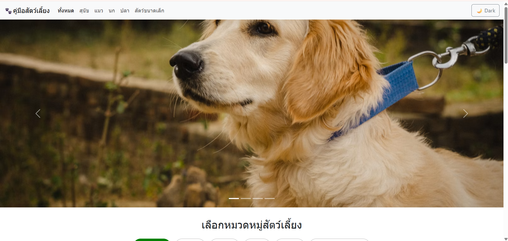
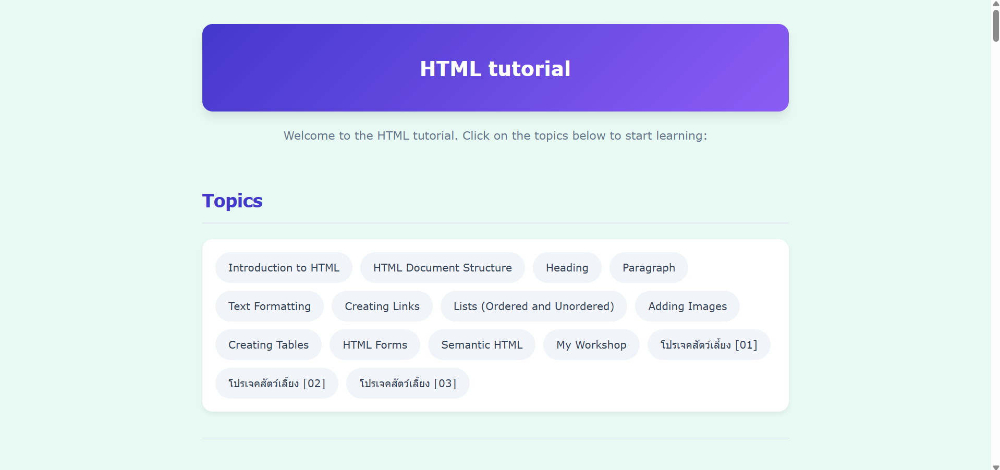

รวมโปรเจกต์และผลงานการพัฒนาเว็บแอปพลิเคชันและซอฟต์แวร์ที่ผ่านมา

เว็บไซต์แนะนำข้อมูลการเลี้ยงสัตว์ ออกแบบด้วยแนวคิด Responsive Design เน้นการใช้งานง่าย จัดเลย์เอาต์แบบ Bento Grid ด้วย HTML5 และ CSS3 และตั้งค่า Deploy ขึ้น GitHub Pages สำเร็จ

เว็บไซต์สอนใช้งาน HTML สำหรับผู้เริ่มต้นที่ต้องการเรียนรู้พื้นฐานการสร้างหน้าเว็บ ครอบคลุมเรื่องโครงสร้างหน้าเว็บ การใช้งานแท็กต่าง ๆ และตัวอย่างการเขียนโค้ด พร้อมสื่อความรู้แบบเข้าใจง่าย เพื่อให้ผู้เรียนสามารถนำไปประยุกต์ใช้ได้จริง
เว็บไซต์ประวัติส่วนตัวและแสดงทักษะความสามารถ (Portfolio) พัฒนาด้วย CSS Grid และ Flexbox รองรับการแสดงผลบนหน้าจอทุกขนาด (Responsive)